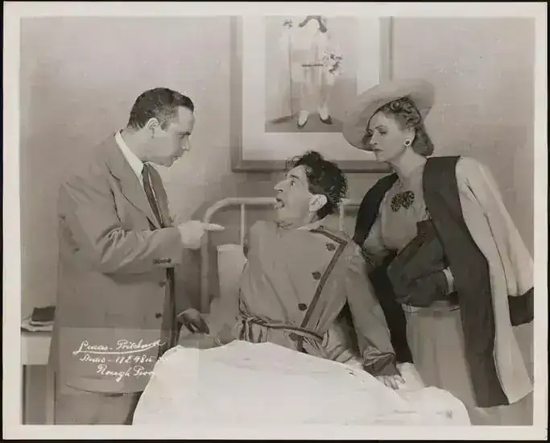
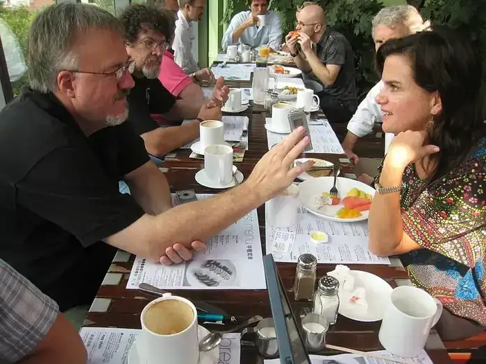

The thread
In 2017 the illustrator Adam Ellis posted a thread on Twitter describing a ghost he called 'Dear David' — a child with a large head — appearing in his apartment, with photographs, drawings and updates. The thread ran for months and gathered a large following.
Maps, diagrams and images




The status
Ellis has described the story as a performance and has not claimed it as documentary; the photographs and drawings were made by him, and the narrative was constructed. The format — a real-time thread with a likeable narrator — is what made it work.
The story has since been optioned for film, which is a normal outcome for a successful piece of internet fiction.
Documented: the thread and its author.
Documented: the drawings and photographs.
Not established: any ghost.
The technique: real-time serialisation.
The label: fiction.
Why it is in the archive
Because it is the best-executed internet ghost story, and because its author was honest about what it was.
Open resources on this topic
- BookDear David, 1974-03-14, Jess Jessop Response Letter to Pacific Coast Times Volume 2 Number 2, Friendly Police — Jessop, Robert Hall "Jess" · 1974 (Internet Archive, free to read)
- BookCIA Reading Room cia-rdp80m01066a001100080004-0: LETTER TO DEAR DAVID FROM W. E. COLBY — CIA Reading Room · 1975 (Internet Archive, free to read)
- BookDear David Bowie — theblondenerd · 2018 (Internet Archive, free to read)
- PapersOpen-access articles: DOAJ · PubMed Central · Internet Archive Scholar
- BooksPublic-domain and borrowable copies: Open Library · Project Gutenberg · Google Books
Cite this page
Momin, S. (2026). Dear David. The Larger World Archive. https://drsamonline.github.io/LARGE_GLOBE/dear-david.htmlMomin, Sohil. “Dear David.” The Larger World Archive, 2026, https://drsamonline.github.io/LARGE_GLOBE/dear-david.html.Momin, Sohil. “Dear David.” The Larger World Archive, 2026. https://drsamonline.github.io/LARGE_GLOBE/dear-david.html.@misc{dear2026dear,
author = {Momin, Sohil},
title = {Dear David},
year = {2026},
howpublished = {The Larger World Archive},
url = {https://drsamonline.github.io/LARGE_GLOBE/dear-david.html},
note = {Last reviewed 20 November 2026}
}Last reviewed 20 November 2026 · Corrections policy · this page is not peer reviewed
Sources for this page
- Wikipedia, “Dear David” — the threaden.wikipedia.org
- Wikipedia, “Twitter” — the platformen.wikipedia.org
- Wikipedia, “Viral phenomenon” — the categoryen.wikipedia.org
- Wikipedia, “Internet fiction” — the genreen.wikipedia.org